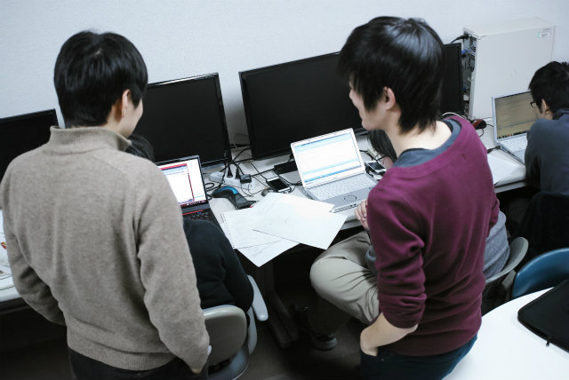

| ・プログラミング演習 (H26.12.03) | |||
|
いつもより半年早く研究室配属した3年生には、計測研で使うプログラムを春までに書いてもらうことになりました。内容は、3つの手法（ホログラフィ計測、センサ計測、PIV計測）が実行できる基本プログラムの作成です。3つ出来るようになった頃には、統計処理、画像処理、数値解析、データ可視化、論文読み込み、レポート作成が身についています（助教の人談）。 |
|||
|
それぞれの計測のエキスパートから直接指導 |
まずは、おまじないを先頭につけたらOK | ||
|
半年前の自分に教えるように |
ポインタはポインタ？ | ||
|
いろいろincludeしておく |
Shogoの説明 | ||
|
おなじく、ムーくん |
あってるか確認する方法 | ||
|
教え合ったり |
てか、人、多っ！ | ||
|
なんやったけ？ |
優しく教えてね | ||
|
研修帰りのS吉 |
卒業してしまう前にいろいろ学びとろう | ||
|
ポインタ、、、 |
Simpson則といえばK松 | ||
|
箱があるとして、 |
精度の話はパスして | ||
|
かいつまんで要点だけ |
K松の | ||
|
K松による3回のための説明 |

教えるのは難しいね | ||
|
盛り上がってます |
K松講座 | ||